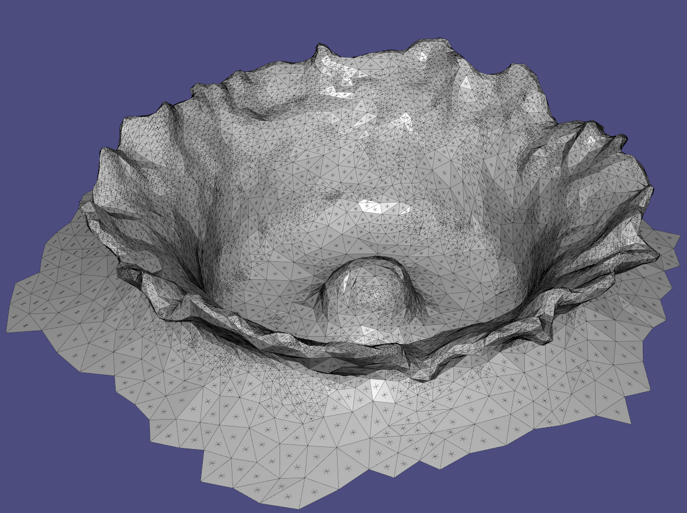
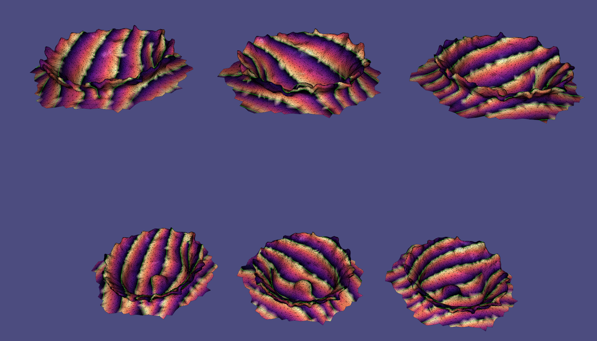

Our software provides assembly instructions which can be patterned onto a range of different materials. This is one of the first public demonstrations of the product of a deep academic exploration of basket weaving, the oft chided signifier of a meaningless pursuit. We hope that this installation will encourage others to engage with the aimless - a domain whose richness we find unparalleled.
Here is another example of an interactive installation powered by the whoa board
Here we show a past fabrication project, comparing the simulated model with the fabricated one.
Here are some behind the scenes views of our software system.
 And here is a very preliminary prototype of a torus fabricated out of EL ribbons
Prototype woven EL ribbon sculpturepic.twitter.com/0Oe96vmI8M
— Whoa (@whoaboard) August 9, 2018